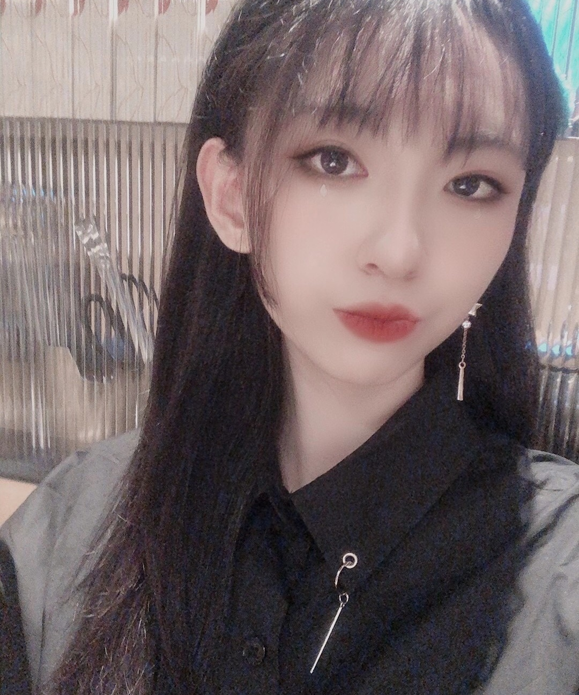

关于我
个人经历
我现在就读于美国纽约的帕森斯艺术与设计学院。
我的专业是设计与科技（交互设计），主要是JS语言，网页和技术类设计等。
我的学习经历非常丰富多彩，我曾在北京（中国），深圳（中国），香港（中国），布鲁斯班（澳大利亚）， 圣路易斯（美国）和纽约（美国）就读不同的学校，所以我有非常强的适应能力。
我耐心且努力，具有高效率和活跃的思维能力，也非常愿意听取他人的建议和想法做出一些改进。 我在初中和高中时期完成了IB DP的课程，这也使得我对小组合作得心应手， 同时，我还经常担任小组中的组长，我非常乐意跟组员们沟通探讨，也很喜欢帮助他们分工， 让他们发掘自己擅长的部分。
☆
工作经验
2020年夏天，我曾在国内一家游戏公司实习过，实习岗位是资源策划组。 工作内容是协调各个小组，实现快速对接并保证产品的设计与质量。 我主要负责设计小组和建模小组之间的沟通，有时也会参与到修改设计里面， 并保证产品代码可以正常运作。
☆
其他
捐款，组织捐赠，义卖活动，支教等。
乐器（钢琴，长笛，葫芦丝等），作曲，写作、创作故事，设计小游戏，演讲、讲座等。
☆